Java Program Developement
Agenda
- Elements of a Java Program
- Java API
- Variables and Literals
- Primitive Data Types
- The String Class
- Operators
- Combined Assignment Operators
- Conversion Between Primitive Data Types
- Constants
- Scope of Variables and Blocks
- Comments
- Understanding Keyboard Input
Elements of a Java Program
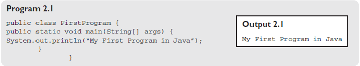
- To compile the program using command line argument for the program FirstProgram.java, the method is as follows
-
C:\>javac FirstProgram.java
- The javac is a compiler which compiles the program FirstProgram.java and converts the source program into bytecode in a file FirstProgram.class.
-
The bytecode is the first step in the process of execution of the program. The second step is to execute the .class file using an interpreter as follows:
-
C:\>java FirstProgram
- This command executes the program and the result is shown in Output
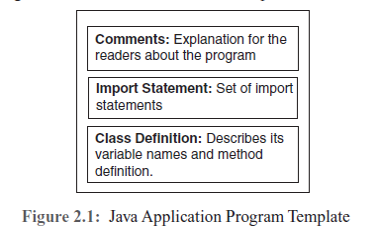
Java API
- Java provides an Application Program Interface (API) which is a collection of classes used to develop programs.
- API includes all packages, classes and interfaces. Packages are a library of classes that are used to keep the class name space as a group.
- Packages are created by grouping classes and then used in a program without moving the classes to the workspace.
- To use a class from Java API, include an import statement at the start of the program.
-
importjava.util.Scanner;
- Here, the import statement gets access to the Scanner class defined under a sub package called util, which is again grouped in the Java package.
- Some of the more frequently used packages are:
- java.lang
- java.awt.event
- java.io
- javax.swing
- java.util
Variables and Literals
- A variable is a titled portion of the memory used to store data that is used in any program that may even be other than Java. A variable can store only one type of data.
- The type of data stored in a variable is predefined by Java.
- A variable has a range of values it can accommodate; the type of data it can store and the type of operations performed are verified by the compilation process.
- Rules to be followed to name a variable:
- The name of a variable may be of any length depending on the system requirements.
- The name must start with an alphabet, underscore (_) or a dollar symbol ($).
- The remaining characters of the identifier can be alphabets or numeric.
- Special characters such as @, % etc., are not allowed as part of the identifier name.
- Underscore (_) can be used to connect two words such as first_name.
- As mentioned earlier, Java is case sensitive; hence, the identifiers average and Average are treated as two different variables.
- Blanks or tabs may not be used in identifier names.
- Naming a variable should reflect the purpose for which it is declared in a program.
-
In Java, the naming convention followed is
- the variable name starts with a lowercase alphabet
- for the remaining words, the first alphabet is in upper case
- It is not compulsory to follow the above convention to name a variable and programmers can use any naming convention. However, they must follow the rules for naming a variable.
Primitive Data Types
Integer Variable
Floating-point Variables
Character Variables
Boolean Variables
- The Boolean variable has only two values: true or false.
- These two values are Boolean constants.
- For example, a Boolean variable may be declared as follows
-
Boolean employed = true;
- The above statement declares a Boolean variable employed and initializes it with the Boolean value true.
- The Boolean variable can be reassigned by another value as follows
- employed = false;
Assignment Statement
- The equal(=) sign is used as the assignment operator.
- The assignment operator has a Right Hand Side (RHS) and Left Hand Side (LHS).
- The RHS must be a variable and the LHS may have constant or variable or expression.
- If the assignment statement has a constant on the LHS, the value is assigned to the RHS variable.
- If it has a variable on the LHS, the value of the variable is assigned to the RHS variable.
- If the LHS has an expression, it is evaluated and the result is assigned to the RHS variable.
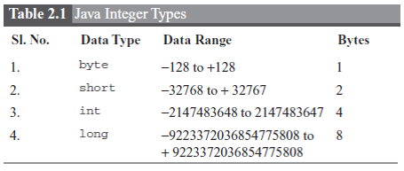
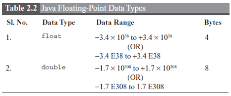
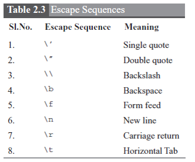
The String Class
- To store a group of characters, Java provides the predefined class called String.
- The String class helps to create and manipulate strings.
- The String class is a default package which is available to all the programs and there is no need to import this package.
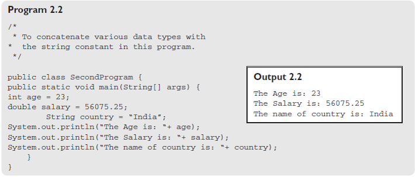
Operators
- Operator is a symbol that informs the compiler to perform some operation on the given data.
- There are several operators provided by Java.
- The operators can be classified into four categories
- Arithmetic
- Relational
- Logical
- Bitwise.
Arithmetic Operators
Relational Operators
Bitwise Operators
Arithmetic Operators
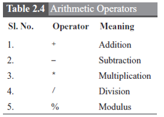
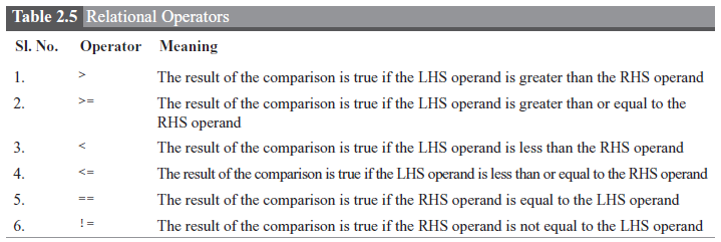
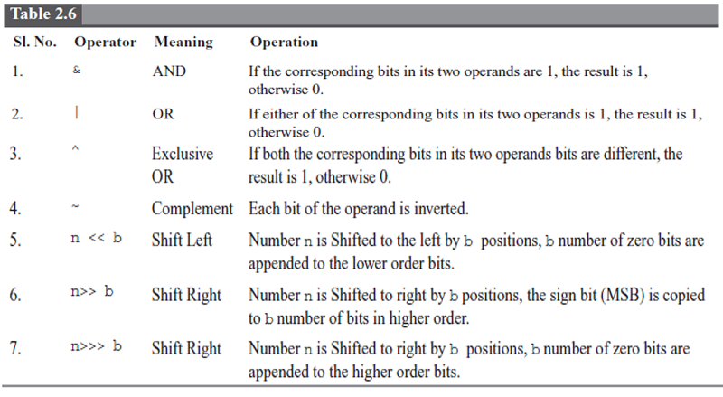
Combined Assignment Operators
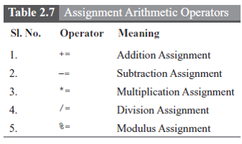
Conversion Between Primitive Data Types
- Type conversion, also called Type Casting, takes place when one primitive data type value is assigned to another primitive data type.
- The primitive data types are arranged in a sequence as follows based on the number of bytes each one occupies 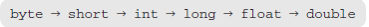
- The type conversion takes place for the above primitive data types in reverse order automatically.
Constants
-
A value that does not change during the execution of a program is called a constant
Integer Constant
- Any type of value is called a constant or literal. Integer constants are of the type int or long, and can be specified as a sequence of digits.
- An integer constant can represent its value in four different ways, namely, decimal, hexadecimal, octal and binary.
- In the hexadecimal number system, the integer value is represented by prefixing the value with either 0x or 0X and followed by its digits 0 to 9 and A to F in place of 10 to 15.
- The long integer value is appended by uppercase or lowercase L.
- The binary value is represented by prefixing the value with 0b or 0B and followed by its digits.
Floating-point Constant
- By default, float constants are of double type. For example, the float value 4.5 is a double type.
- To be represented as a float value, the floating-point constants can be appended with uppercase or lowercase F.
- The larger value of a floating-point constant can be represented using an exponent.
- This representation can use either power of X10 or E or e.
Scope of Variables and Blocks
- The block is a code enclosed within the opening curly brace and closing curly brace.
- The visibility of these variables is only within this block; if these variables are accessed outside the block, the compiler will report an error message “undefined symbol”.
- Scope is a block of code where a variable is declared and within which it can be accessed.
- The lifetime of a variable is only within the block where it is declared.
Comments
- A comment helps the programmer or non-programmers to understand the purpose and explains the complexity of program segments.
- There are two ways in which comments can be used in a program.
- The first is single line comments and the second is block comment.
- Single line comments start with the symbol //.
-
The text between the symbol // and the end of the line is a comment.
-
// Explains the process of the main() method
- Block comments start with the symbol /* on a starting line and can be extended to any number of lines and the block comment ends by the */ symbol.
-
The text placed between the pair of symbols /* and */ are treated as comments and the compiler ignores those lines.
-
/*
To introduce the basic elements of a Java
in the program FirstProgram.java.
*/
Understanding Keyboard Input
- Input to be given to the program is made simple with the use of Scanner class API.
- Scanner class is a predefined class used to receive values for the variables
- The usage of the Scanner class API will explain the purpose of API and can be thought of as an example for API learning.
- The Scanner class is defined with a number of variables and methods.
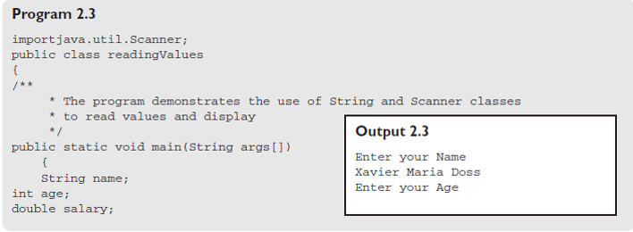
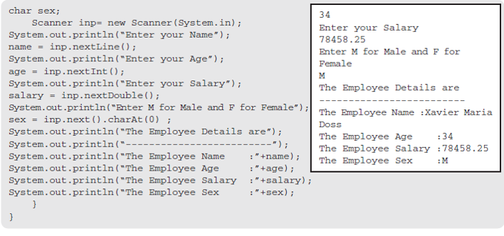